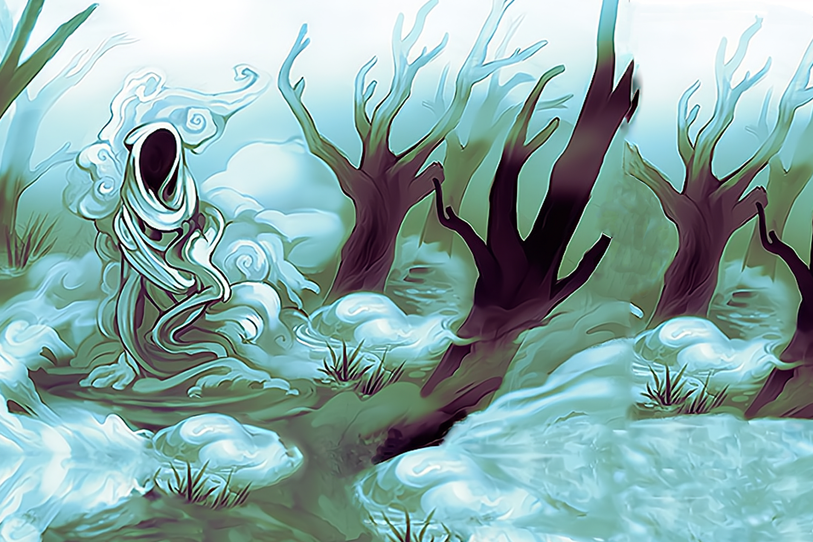

Shroud of Silent Mist
A spirit of dissolution and the cold silence of death, creeping quietly down from the hills and across the open waters. Its trail is adorned with dew-covered leaves and the bones of small animals.
Some legends say Shroud of Silent Mist came from the final breath of a Dahan spirit-speaker who spoke too freely of secrets entrusted to him, for which his soulform was afflicted with a death-bringing curse. Others claim it was born from the legends and tales rather than from any actual person, for the story of Kadura shows that human and Spirit do not so readily transform into each other.
SETUP:
Put 2 {presence} on your starting board: 1 in the highest-numbered Wetland and 1 in the highest-numbered Mountain.
Play Style:
Constantly shifting and moving its {presence} around the board. Hurt more than most by {presence} loss due to its desire to surround and envelop the Invaders.
Can (slowly) clear the most built-up of lands, but its real strength is the free Fear from Slow and Silent Death.
Extremely limited Energy income, but can stretch to Major Powers if it manages to gather enough Energy from its Special Rules.
COMPLEXITY
High
|
Summary of Powers
|
|
|
|
|
|
|
OFFENSE
|
CONTROL
|
FEAR
|
DEFENSE
|
UTILITY
|